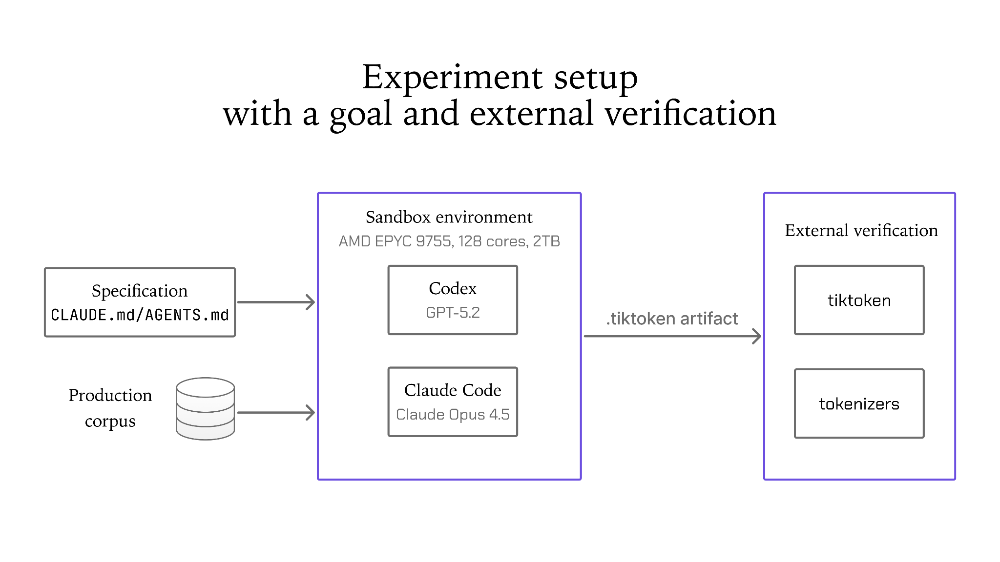
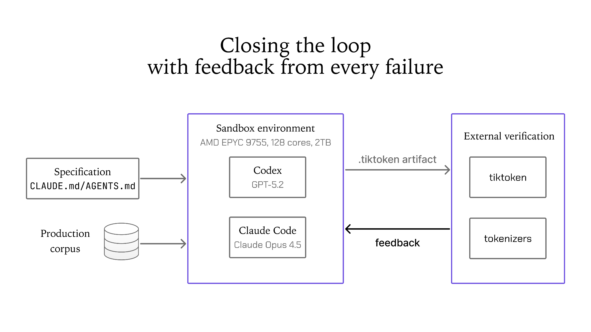
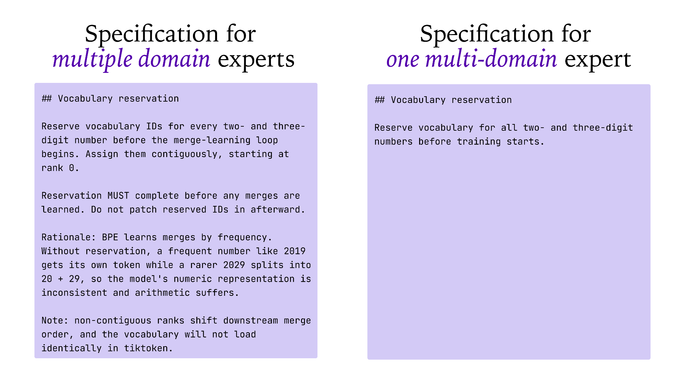

2025年底，我们做了一个实验来回答一个问题：「编码agent能否靠自己的力量从零解决一个生产级问题？」
为此，我们用当时公开可用的最强编码模型驱动两个agent，给它们一个真实问题和真实截止日期。这个实验的产物是一个叫toktoktok的tokenizer训练器，现在已在GitHub上开源。
在这篇文章中，我们分享关于设计有效循环（loop）的所学：让agent能自主解决生产级问题：如何为多领域专家指定目标，以及如何搭建验证基础设施。
作为我们关于词表大小对边缘LLM影响研究的一部分，我们需要一个字节对编码（BPE）tokenizer训练器，能在单台机器上跑几万亿tokens。但tokenizer训练领域很薄：sentencepiece为非BPE tokenizer优化且慢，Hugging Face的tokenizers在我们的语料上内存不足，tiktoken则完全没有训练能力。
所以我们需要的正是构建一个生产级BPE tokenizer训练器。从使用现有库的经验，我们还知道内存大小才是真正的瓶颈，而且它们缺了我们需要的两个特性：从现有tokenizer的热启动（词表扩展）和按语言的词表预算。这给了我们一个具体任务、真实截止日期，以及回答「编码agent是否足够可靠、能自主解决任务」的有效方式，因为它满足以下标准：
生产级。 agent常见的自主解决问题方式回答不了这个问题。首先，它们常被用于原型设计，从不要求达到生产标准。其次，它们常重新实现别的语言里已存在的东西，比如「把SQLite移植到Rust」或「用Zig写个C编译器」：这是对模型预训练中很可能见过的内容的翻译。与两者都不同，我们的目标明确是上线到生产，而且因为BPE tokenizer训练足够新、公开参考实现很少，它成了理想的「测试分布」问题样本。
多领域专长。 在Liquid AI，我们的专家深但各在一个领域。我们的ML研究员能从记忆里告诉你为什么OpenAI的cl100k给每个三位数保留rank，但他们从没写过一行Rust。我们的Rust工程师恰恰擅长写这种内存感知、多线程的系统代码，但他们从没训练过tokenizer。
这是两个不相交的人群，谁也无法独自解决这个问题。两种人类变通方案都有损：要么一人先学另一人的一半，要么我们按协作来配人、为协调开销买单。这就是我们把agent指向的缺口：「它能否覆盖我们任何一个工程师都不具备的专业跨度？」
外部可验证。 产物必须能在tiktoken和Hugging Face tokenizers中加载。由于与第三方软件的这种互操作性，工作可以由agent无法修改的代码检查。成功不是自报的，而是两个第三方库要么产生正确的token、要么不产生。
虽然[必须构建的细节](https://github.com/Liquid4All/toktoktok)本身很有意思，但本文重要的是：一个真实生产级、对我们的单领域专家难、且外部可验证的任务，是回答「agent能否在没有人类监督下完成工作」的唯一诚实方式。
对这个实验，我们选择Claude Opus 4.5和Codex with GPT-5.2：2025年底两个最强的公开可用编码模型：作为编码agent，让两者都在规划模式下工作。在任一agent写一行代码之前，我们在它周围建立了两样东西：一个瞄准的目标，以及一个验证它是否达到目标的方式。

目标在规格文件里描述。这是一个由操作者写就的单一AGENTS.md / CLAUDE.md文档，描述结果及其约束，而非实现：主要架构约束是内存。设计把复杂度预算花在内存上，因此远超RAM的语料也能保持相当代表性。计算和I/O是次要的，用直接的方式处理：系统级编程语言（Rust）和多线程应该足够。
为验证agent是否达到指定目标，我们给了它两样它无法影响的东西：
生产数据：我们给agent沙箱访问我们的生产训练数据集，以及一台能处理它的机器：具体是AMD EPYC 9755，128核、256线程、2 TB内存。
外部验证harness：训练出的词表必须能被tiktoken和Hugging Face tokenizers加载，并检查编码和解码往返、以及两者之间的ID级一致：跨多种语言、数字、货币格式、制表符、CRLF换行符和源代码。
有了这些组件，agent就能朝着指定目标工作了。
我们用两个编码agent运行实验。操作者从外部监控，只读harness、从不读一行代码。
两个agent都在30分钟内产出了一个可工作的训练器。它们解析配置、遍历语料、应用硬编码的merges、运行BPE训练，并发出一个通过自己单元测试的有效 .tiktoken文件。
两者都能在几兆字节上成功训练玩具tokenizer。产物在tiktoken中加载。所有测试通过。如果我们在这一点停止评估，结论会是两个运行都成功。
然而，两个训练器都没能撑过完整生产数据集。第一次运行中，每个阶段的每个单元测试都通过了：因为几兆字节的干净文本不会触发以下任何一项：
然后，我们让agent对着真实数据循环：执行、撞墙、报告症状、让agent诊断修复、再运行。
| 必须发现的 | 它如何宣告自己 | 什么抓住了它 | 修复工作量 |
|---|---|---|---|
| 文件编码。Parquet对同一逻辑列允许多种编码。 | 测试中读得好的文件在语料里被静默错误处理 | 真实语料文件 | 数小时 |
| 内存感知。逐文档的Vec开销吞没负载 | 大约目标语料1% 处内存不足 | 全规模运行 | 两到三天：chunk批处理、哨兵、多段迭代 |
| 不正确的并行化。并行化关键路径的一部分让其余保持串行 | 每个核都忙，吞吐仍不可接受 | 全规模运行 | 一到两天 |
| 预分词速度。\s+(?!\S) 迫使回溯正则引擎 | 分析器显示预分词主导；对抗性空白变成二次方 | 全规模运行 | 数小时，加一个正确性判断 |
| Rank排序。tiktoken从rank顺序推导merge顺序，所以rank必须连续 | 词表无怨言地加载，编码却与预期不同 | 外部harness | 数小时 |
| 重复merges。训练出的merge可能重复现有token并折叠词表 | 词表少N个，每个后面的rank都移位 | 外部harness | 数小时 |
| 数字编码。Rust的regex crate把 {1,3}+ 重新解析为 ({1,3})+ | tokenizers和tiktoken在除了数字外的一切上一致 | 外部harness | 一行 |
经过五次以上迭代、进展甚微，我们停止了Codex/GPT-5.2轨道：它仍在训练吞吐上挣扎。那是个资源配置决定：一个操作者、真实截止日期，而到那时Claude Opus 4.5轨道在相同轮数后走得更远。我们的判断是Claude的第一版起点更好：比GPT-5.2更可靠地抓住了规格的细微之处和约束背后的意图。

Claude Opus 4.5又经过几次迭代关掉了剩余问题，产出了一个能运行完整生产配置的训练器：几万亿tokens的多语言和代码数据、多阶段、单机、数天完成。输出干净地通过了外部harness。
我们运行这个实验是为了回答「编码agent能否靠自己的力量从零解决生产级问题？」。把「两个agent都没能零样本做到」读作一个关于模型能力的故事很诱人，但这是错误的结论。按我们开头设定的标准，实验成功了。然而让它成功的不是任何一次巧妙的回合，而是循环。
仓库里的两千行不是零样本响应的产物，而是迭代过程的残迹。几乎每一行不显然的代码，一旦你知道它需要写就很容易写；昂贵的是知道它需要写。
这意味着agent能否在没有人类监督的情况下成功达成目标，取决于拥有一个对真实环境约束收敛的迭代循环。这允许agent迭代地发现并体验真实世界的凌乱。
从这个实验我们学到编码agent能靠循环自主解决任务，但更重要的是，我们学到两个关于设计有效循环的宝贵教训，它们今天已成为我们工程团队的日常实践。
从实验我们学到，编码agent是多领域专家，覆盖我们任何工程师都不具备的专业跨度。原来它知道OpenAI的cl100k正则，也知道Rust的rayon。我们能配到这个问题上的没人两者都懂。这改变了我们指定目标的方式，因为感觉更像和另一个团队的、碰巧也懂你团队材料的同事交谈。

考虑把这个问题交给一个没有tokenizer背景的强软件工程师实际需要什么。显而易见的答案是给他们写一份详细spec。这是专业知识迁移的经典困境：spec写太短，工程师必须以慢方式发现全部内容。写到足够长、真正可执行，你就写了伪代码：到那时你自己已经需要那份领域知识，几乎可以自己做这份工作了。
LLM不在这个困境里，因为它带着背景知识到达。这改变了spec是什么。我们的是短的。它陈述结果和约束，而非机制。
拿我们spec里的一个真实例子：「在训练开始前为所有两位数和三位数数字预留词表」。对没有背景的工程师，这是一个任意要求。他们可以照字面实现它却仍然做错，因为这个句子不携带自己的动机。它关乎给模型一致的数值表示，让算术不依赖哪些数字对恰好在这份语料里频繁：想想GPT-2的tokenizer，由于训练数据频率它有一个独特的2019 token但没有2029 token。不知道这一点，他们无法分辨指令的哪些部分是关键的、它属于流水线的哪个位置、或者它对自己的设计还暗示了什么。
我们的操作者从没读一行产出的代码。这之所以可接受，只因为成功标准是agent无法操纵的东西。我们在循环设计中看到的一个常见错误是弱验证：对着玩具规模数据跑，或对agent的影响开放，比如让它编辑自己的单元测试。
主要的教训是设计一个对现实约束收敛的循环，包含以下组件：
1.对规模化的真实生产数据迭代。 重要的失败在测试套件里是不可见的，只能在完整规模的生产数据里发现。
2.用外部harness验证。 这才是让自主可接受的东西。操作者从不读代码，那之所以可容忍，只因为正确性由tiktoken和Hugging Face tokenizers定义：agent没有写也无法影响的软件。如果我们接受它自己的测试套件作为证据，我们会有两个通过自己测试、却安静地产生不同词表的实现。把问题结构化，让第三方能评判产物。
这些是我们2025年底运行的实验的结果和教训：是的，编码agent能靠自己的力量从零解决生产级问题、无需任何人类监督：但只有当它们在循环里运行时。
我们学到的教训今天已成为我们工程团队的日常实践。半年过去，指定目标是我们最花心思的部分，而用真实数据和外部验证构建循环已成为标准实践。
今天我们运行的循环远超像tokenizer训练器这样的一次性构建：它有清晰、可验证、循环向其收敛的最终目标。我们现在运行的很多循环反而是开放式的，朝着没有唯一正确答案的目标爬山：调内核、盯持续集成、分流进来的pull request、或扫描生产日志找异常。每一个里，我们检查的是指标而不是代码。
今天的模型明显更好，但让这成为常规的是它们已经可靠到能把整个循环交给它们。如果这能泛化，它对ML和软件工程如何被完成的方式改变，将超过任何原始编码能力的变化。
toktoktok在Apache 2.0下开源，位于https://github.com/Liquid4All/toktoktok。它能从零训练tiktoken兼容的BPE词表或扩展现有词表，读取 .txt和 .parquet，通过多阶段训练跨语言和领域分配词表预算，并保持在你声明的内存预算内。Hugging Face的转换脚本双向工作，并在写任何东西之前验证等价性。
它的每一行都由agent写出，没有一行被我们读过。
由Mathias Lechner撰写，Leonie Monigatti贡献。
我们感谢AMD的伙伴关系，让这个实验的硬件可用。
引用本文：Liquid AI, "Designing Loops for Production-Grade Work", Liquid AI Blog, Aug 2026。
@article{liquidAI2026loops,
author = {Liquid AI},
title = {Designing Loops for Production-Grade Work},
journal = {Liquid AI Blog},
year = {2026},
note = {www.liquid.ai/blog/agent-loops},
}参考：https://www.liquid.ai/blog/agent-loops